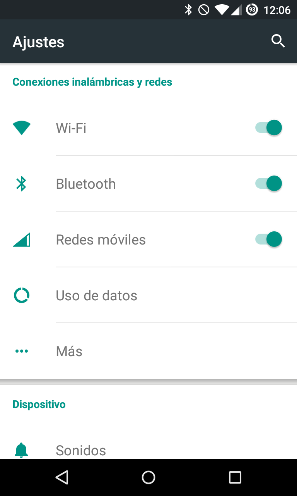

Introducción general a Bluetooth
La plataforma de Android incluye compatibilidad con la pila de red Bluetooth, la cual permite que un dispositivo intercambie datos de manera inalámbrica con otros dispositivos Bluetooth.
El marco de trabajo de la aplicación proporciona acceso a la funcionalidad Bluetooth mediante las API de Bluetooth de Android.
Estas API permiten a las aplicaciones conectarse de manera inalámbrica con otros dispositivos Bluetooth y habilitan las funciones inalámbricas punto a punto y multipunto.
Con las API de Bluetooth, una aplicación de Android puede realizar lo siguiente:
* Buscar otros dispositivos Bluetooth
* Consultar el adaptador local de Bluetooth en busca de dispositivos Bluetooth sincronizados
* Establecer canales RFCOMM
* Conectarse con otros dispositivos mediante el descubrimiento de servicios
* Transferir datos hacia otros dispositivos y desde estos
* Administrar varias conexiones
Esta página se centra en el sistema de Bluetooth clásico. Este sistema es la opción ideal para las operaciones que consumen más batería, como la transmisión y la comunicación entre dispositivos Android. Para dispositivos Bluetooth con bajos requisitos de energía, Android 4.3 (API de nivel 18) presenta compatibilidad de API con Bluetooth de bajo consumo. Para obtener más información, consulta Bluetooth de bajo consumo.
Aqui se describen diferentes perfiles de Bluetooth, incluido el perfil de dispositivo de salud. Luego, se describe la manera de usar las API de Bluetooth de Android a fin de llevar a cabo las cuatro tareas principales necesarias para establecer la comunicación a través de Bluetooth: configuración de Bluetooth, búsqueda de dispositivos sincronizados o disponibles en el área local, conexión con dispositivos y transferencia de datos entre dispositivos.
Conceptos básicos
Para que los dispositivos compatibles con Bluetooth transmitan datos entre sí, primero deben establecer un canal de comunicación mediante un proceso de sincronización. Un dispositivo (el dispositivo detectable) se habilita para recibir solicitudes de conexión entrantes. Otro dispositivo encuentra el dispositivo detectable mediante un proceso de detección del servicio.
Después de que el dispositivo detectable acepta la solicitud de sincronización, los dos dispositivos completan un proceso de conexión en el que se intercambian claves de seguridad. Ambos dispositivos almacenan estas claves en caché para usarlas posteriormente. Después de que terminan los procesos de sincronización y conexión, los dispositivos intercambian información. Cuando se completa la sesión, el dispositivo que inicializó la solicitud de sincronización libera el canal que usó para la sincronización con el dispositivo detectable.
Sin embargo, siempre y cuando estén dentro del rango de alcance y ninguno elimine la conexión, los dos dispositivos permanecen vinculados para poder volver a conectarse automáticamente en una sesión futura.

Permisos de Bluetooth
Para usar las funciones de Bluetooth en tu aplicación, debes declarar dos permisos. El primero es BLUETOOTH. Necesitas este permiso para establecer cualquier comunicación de Bluetooth, como solicitar o aceptar una conexión y transferir datos.
El otro permiso que debes declarar es ACCESS_FINE_LOCATION. Tu app necesita este permiso porque es posible usar un escaneo de Bluetooth para reunir información sobre la ubicación del usuario. Esta información puede obtenerse desde el dispositivo del usuario o desde balizas Bluetooth en determinados lugares, como tiendas y áreas de tránsito.
Si deseas que tu app inicialice la detección de dispositivos o controle la configuración de Bluetooth, debes declarar el permiso BLUETOOTH_ADMIN además del permiso BLUETOOTH. La mayoría de las aplicaciones necesitan este permiso solamente para poder ver dispositivos Bluetooth locales. Las demás capacidades que otorga este permiso no deben usarse, a menos que la aplicación sea un “administrador de energía” que modifique la configuración de Bluetooth a pedido del usuario.
Declara los permisos de Bluetooth del archivo de manifiesto de tu aplicación. Por ejemplo:
Trabajar con perfiles
A partir de Android 3.0, la API de Bluetooth incluye compatibilidad para trabajar con perfiles de Bluetooth. Un perfil de Bluetooth es una especificación de interfaz inalámbrica para la comunicación entre dispositivos basada en Bluetooth. Un ejemplo es el perfil de manos libres. Para que un teléfono móvil se conecte a auriculares inalámbricos, ambos dispositivos deben ser compatibles con el perfil de manos libres.
La API de Bluetooth de Android proporciona implementaciones para los siguientes perfiles de Bluetooth:
Auriculares. El perfil de auriculares ofrece compatibilidad con auriculares Bluetooth para usarlos con teléfonos móviles. Android proporciona la clase BluetoothHeadset, que es un proxy para controlar el servicio de auriculares Bluetooth. Esto incluye los perfiles de manos libres (v1.5) y de auriculares Bluetooth. La clase BluetoothHeadset incluye compatibilidad con comandos de AT. Para obtener más información sobre este tema, consulta la sección Comandos de AT específicos del proveedor.
A2DP. El perfil de distribución de audio avanzada (A2DP) define el nivel de audio de alta calidad que puede transmitirse de un dispositivo a otro a través de una conexión Bluetooth. Android proporciona la clase BluetoothA2dp, que es un proxy para controlar el servicio de A2DP Bluetooth.
Dispositivo de salud. Android 4.0 (nivel de API 14) presenta compatibilidad con el perfil de dispositivos de salud (HDP) Bluetooth. Esto te permite crear aplicaciones que usen Bluetooth para comunicarse con dispositivos de salud que admiten Bluetooth, como monitores de frecuencia cardíaca, medidores de la sangre, termómetros y balanzas, entre otros.
Para acceder a una lista de los dispositivos compatibles y sus correspondientes códigos de especialización de los datos del dispositivo, consulta la sección Especializaciones de datos de los dispositivos con HDP de Bluetooth. También se hace referencia a estos valores en la especificación ISO/IEEE 11073-20601 [7] como MDC_DEV_SPEC_PROFILE_* en el Anexo de códigos de nomenclaturas. Para obtener más información sobre el HDP, consulta la sección Perfil de dispositivos de salud.
Por ejemplo, en este fragmento de código, se muestra la manera de conectarse a un objeto del proxy de BluetoothHeadset, de modo que se pueda controlar el perfil de auriculares:
Configurar el sistema Bluetooth
Para que tu aplicación pueda comunicarse a través de Bluetooth, debes verificar que Bluetooth sea compatible con el dispositivo y, si es así, asegurarte de que esté habilitado.
Si Bluetooth no es compatible, debes inhabilitar correctamente cualquier función de Bluetooth. En caso de que Bluetooth sea compatible, pero esté inhabilitado, puedes solicitar que el usuario lo habilite sin abandonar tu aplicación. Esta configuración se logra en dos pasos, mediante el BluetoothAdapter.
Paso 1 : Obtén el BluetoothAdapter
El BluetoothAdapter es obligatorio para toda actividad de Bluetooth. Para obtener el BluetoothAdapter, llama al método estático del getDefaultAdapter().
Esto muestra un BluetoothAdapter que representa el propio adaptador de Bluetooth del dispositivo (la radio Bluetooth). Existe un adaptador de Bluetooth para todo el sistema y tu aplicación puede interactuar con él usando este objeto.
Si getDefaultAdapter() devuelve null, significa que el dispositivo no es compatible con Bluetooth. Por ejemplo:
Paso 2: Habilita Bluetooth.
A continuación, debes asegurarte de que Bluetooth esté habilitado. Llama al isEnabled() para verificar si Bluetooth se encuentra actualmente habilitado. Si este método muestra “false”, Bluetooth no estará habilitado. Para solicitar que Bluetooth esté habilitado, llama a startActivityForResult() pasando una acción de intent ACTION_REQUEST_ENABLE. Esto emite una solicitud para habilitar Bluetooth mediante la configuración del sistema (sin detener tu aplicación). Por ejemplo:
Se muestra un cuadro de diálogo (como en la figura 1) en el que se solicita permiso al usuario para habilitar Bluetooth. Si el usuario responde “Sí”, el sistema comienza a habilitar Bluetooth y el enfoque vuelve a tu aplicación una vez que el proceso se completa con éxito (o no).
La constante REQUEST_ENABLE_BT que se pasa a startActivityForResult() es un valor entero definido localmente que debe ser superior a 0. El sistema te devuelve esta constante en tu implementación de onActivityResult() como parámetro requestCode.
Si la habilitación de Bluetooth se realiza con éxito, tu actividad recibe el código de resultado RESULT_OK en la devolución de llamada onActivityResult(). Si Bluetooth no se habilita debido a un error (o a que el usuario responde “No”), el código de resultado será RESULT_CANCELED.
Opcionalmente, tu aplicación también puede recibir la intent de transmisión ACTION_STATE_CHANGED, que el sistema emite cada vez que cambia el estado de Bluetooth. Esta emisión contiene los campos adicionales EXTRA_STATE y EXTRA_PREVIOUS_STATE, que incluyen los estados de Bluetooth nuevo y antiguo, respectivamente. Los valores posibles de estos campos adicionales son STATE_TURNING_ON, STATE_ON, STATE_TURNING_OFF y STATE_OFF. La recepción de esta emisión puede ser útil si tu aplicación necesita detectar cambios en el tiempo de ejecución realizados en el estado de Bluetooth.
Buscar dispositivos:
Si usas BluetoothAdapter, puedes buscar dispositivos Bluetooth remotos mediante la detección de dispositivos o la consulta de la lista de dispositivos sincronizados.
La detección de dispositivos es un procedimiento de escaneo que busca en el área local dispositivos con Bluetooth habilitado y, luego, solicita información sobre cada uno de ellos. A menudo, esto se denomina detección, consulta o escaneo.
Sin embargo, un dispositivo Bluetooth cercano solamente responde a una solicitud de visibilidad cuando es detectable y acepta solicitudes de información. Si un dispositivo es detectable, comparte información (como su nombre, su clase y su dirección MAC única) como respuesta a la solicitud de detección.
Al usar esta información, el dispositivo que lleva a cabo la visibilidad puede decidir inicializar una conexión con el dispositivo detectado.
Ten presente que existe una diferencia entre la vinculación y la conexión:
Para estar vinculados, dos dispositivos deben reconocer su existencia mutuamente, tener una clave de enlace compartida que pueda usarse para autenticación y ser capaces de establecer una conexión cifrada entre sí.
Para estar conectados, los dispositivos deben compartir un canal RFCOMM y tener la capacidad de transmitirse datos entre sí. Las API de Bluetooth de Android actuales requieren que los dispositivos estén vinculados para que se pueda establecer una conexión RFCOMM. La vinculación se realiza automáticamente cuando inicializas una conexión cifrada con las API de Bluetooth.
En las siguientes secciones, se describe la manera de buscar dispositivos vinculados o hallar dispositivos nuevos mediante la detección de dispositivos.
Realizar consultas a dispositivos sincronizados
Antes de llevar a cabo la detección de dispositivos, es importante consultar el conjunto de dispositivos sincronizados a fin de ver si el dispositivo deseado ya es conocido. Para ello, llama a getBondedDevices().
Esto devuelve un conjunto de objetos BluetoothDevice que representa a los dispositivos sincronizados. Por ejemplo, puedes consultar todos los dispositivos sincronizados y obtener el nombre y la dirección MAC de cada uno, como se demuestra en el siguiente fragmento de código:

Para inicializar una conexión con un dispositivo Bluetooth, solo se necesita la dirección MAC del objeto BluetoothDevice asociado, que puedes recuperar llamando a getAddress(). Puedes obtener más información acerca de cómo crear una conexión en la sección Conectar dispositivos.
Conectar dispositivos
A fin de crear una conexión entre dos dispositivos, debes implementar los mecanismos del lado del servidor y del lado del cliente, porque un dispositivo debe abrir un socket de servidor y el otro debe inicializar la conexión usando la dirección MAC del dispositivo del servidor para inicializar la conexión.
El dispositivo del servidor y el dispositivo del cliente obtienen el BluetoothSocket obligatorio de diferentes maneras. El servidor recibe la información del socket cuando se acepta una conexión entrante. El cliente proporciona la información del socket cuando abre un canal RFCOMM hacia el servidor.
El servidor y el cliente se consideran conectados entre sí cuando tienen un BluetoothSocket conectado en el mismo canal RFCOMM. En este punto, cada dispositivo puede obtener flujos de entrada y salida, y se puede iniciar la transferencia de datos, que se trata en la sección Administrar una conexión. En esta sección, se describe la manera de inicializar la conexión entre dos dispositivos.
Conectarse como servidor
Cuando desees conectar dos dispositivos, uno deberá funcionar como servidor y tener un BluetoothServerSocket abierto. El propósito del socket de servidor es recibir solicitudes de conexiones entrantes y proporcionar un BluetoothSocket conectado cuando se acepta una. Cuando el BluetoothSocket se obtiene del BluetoothServerSocket, el BluetoothServerSocket puede (y debería) descartarse, a menos que quieras que el dispositivo acepte más conexiones.
Para configurar un socket de servidor y aceptar una conexión, sigue estos pasos:
Paso 1 BluetoothServerSocket
Obtén un BluetoothServerSocket llamando a listenUsingRfcommWithServiceRecord().
La string es un nombre de identificación de tu servicio, que el sistema escribirá automáticamente en una nueva entrada de la base de datos del protocolo de detección de servicios (SDP) en el dispositivo. El nombre es arbitrario y puede ser simplemente el de tu aplicación. El identificador único universal (UUID) también se incluye en la entrada del SDP y conforma la base del acuerdo de conexión con el dispositivo del cliente. Es decir, cuando el cliente intenta conectarse con este dispositivo, incluye un UUID que identifica de manera única el servicio con el cual desea conectarse. Estos UUID deben coincidir a fin de que se acepte la conexión.
Un UUID es un ID de string con un formato estandarizado de 128 bits que se emplea para identificar información de manera exclusiva. La ventaja de un UUID es que tiene el tamaño suficiente para que puedas seleccionar cualquiera al azar y que no haya conflictos. En este caso, se usa para identificar de manera única el servicio Bluetooth de tu aplicación. A fin de obtener un UUID que pueda usarse con tu aplicación, puedes emplear uno de los numerosos generadores de UUID al azar de la Web e inicializar un UUID con fromString(String).
Paso 2 Bluetooth accept()
Llama a accept() para comenzar a recibir solicitudes de conexión.
Esta es una llamada de bloqueo. Se muestra cuando se acepta una conexión o se produce una excepción. Una conexión se acepta solo cuando un dispositivo remoto envía una solicitud de conexión que contiene un UUID que coincide con el UUID registrado con este socket de servidor de recepción. Si la conexión se realiza correctamente, accept() devuelve un BluetoothSocket conectado.
Paso 3 Bluetooth close()
A menos que desees aceptar conexiones adicionales, llama a close().
Este método libera el socket de servidor y todos sus recursos, pero no cierra el BluetoothSocket conectado que accept() devuelve. A diferencia del protocolo TCP/IP, RFCOMM solo permite un cliente conectado por canal a la vez, por lo que, en la mayoría de los casos, tiene sentido llamar a close() en el BluetoothServerSocket inmediatamente después de aceptar un socket conectado.
Debido a que la llamada accept() es de bloqueo, no debe ejecutarse en el subproceso de la IU de la actividad principal, de modo que tu aplicación pueda seguir respondiendo a otras interacciones de los usuarios. Por lo general, resulta lógico hacer todo el trabajo que involucra BluetoothServerSocket o BluetoothSocket en un nuevo subproceso administrado por tu aplicación.
Para anular una llamada bloqueada, como accept(), llama a close() en el BluetoothServerSocket o BluetoothSocket desde otro subproceso. Ten en cuenta que todos los métodos en un BluetoothServerSocket o BluetoothSocket tienen seguridad para subprocesos.
Ejemplo:

En este ejemplo, solo se desea una conexión entrante; por lo tanto, apenas se acepta una conexión y se obtiene el BluetoothSocket, la aplicación pasa el BluetoothSocket adquirido a un subproceso separado, cierra el BluetoothServerSocket y abandona el bucle.
Ten presente que, cuando accept() devuelve el BluetoothSocket, el socket ya está conectado. Por lo tanto, no debes llamar a connect(), como lo haces del lado del cliente.
El método manageMyConnectedSocket() específico de la aplicación está diseñado para inicializar el subproceso de transferencia de datos, que se analiza en la sección Cómo administrar una conexión.
Por lo general, deberás cerrar tu BluetoothServerSocket no bien termines de recibir conexiones entrantes. En este ejemplo, se llama a close() apenas se obtiene el BluetoothSocket. Es posible que también desees proporcionar en tu subproceso un método público que pueda cerrar el BluetoothSocket en caso de que necesites dejar de recibir conexiones en ese socket de servidor.
Conclusiones:
• Después de conectar correctamente varios dispositivos, cada uno tiene un BluetoothSocket conectado. Aquí es donde comienza la diversión, ya que puedes compartir información entre dispositivos.